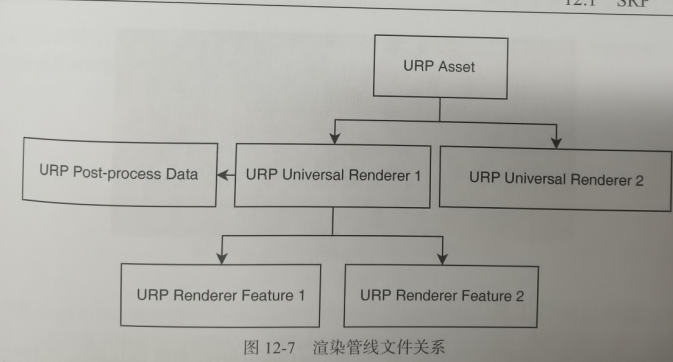

12. 渲染管线
12.1 SRP
unity为了让目标平台充分发挥性能和效果,Unity自2018版本起提供了SRP可编程渲染管线.将C++中调用的API接口尽可能浅层封装并对外提供开方C#调用接口.
OpenGL和OpenGL ES图形API不支持延迟渲染
所以Android不能用延迟渲染管线
12.1.1 SRP Core
unity所有公开的API都在UnityEngine.Renderer当中,URP和HDRP都是基于这些接口开发的,所以我们能接触到的最底层就在这里了.随着Unity越来越多的底层API开方,就可以做越多的优化处理.
12.1.2 安装与配置
按照从上往下的关系越来越具体
URP Global Settings Asset(URP全局文件)
URP Render Pipeline Asset(URP渲染管线资源)
URP Post-process Data/XR System Data(URP后处理配置文件和XR系统着色器)
Universal Renderer Data(URP统一渲染数据)
URP Renderer Feature(URP渲染功能)

12.1.3 摄像机组件工具
一个是用来自由移动摄像机观察的
一个是用来在Rendering Debugger中看不同摄像机的

12.1.4 Look Dev
HDRP才支持,URP不支持
12.1.5 Render Graph Viewer
SRP底层的渲染接口主要有两个ScriptableRenderContext类和CommandBuffer类中的draw系列函数,核心内容均封装在C++底层代码中.
URP是直接调用,在HDRP中所有渲染接口都先经过RenderGraph,再继续调用,好处是这样就会被宰RenderGraphViewer窗口中看到每个渲染步骤,绿色表示可读,红色表示可写.
12.2 URP
12.2.1 URP调试与修改
可以把Package都下下来
然后就需要复制出来,然后把左边的设置改成local packages,把其他关了这样就可以修改调试了
12.2.2 URP与内置渲染管线对比
URP基本支持了绝大多数的built-in功能了
12.2.3 升级着色器
原本built-in的通用着色器Standard官方是提供了材质转换器的,但是如果有大量自定义的Shader,主要是引用的包含文件基本都变了,所以需要全部重新写包含文件,然后标签也全都改了,基本可以认为重写差不多了